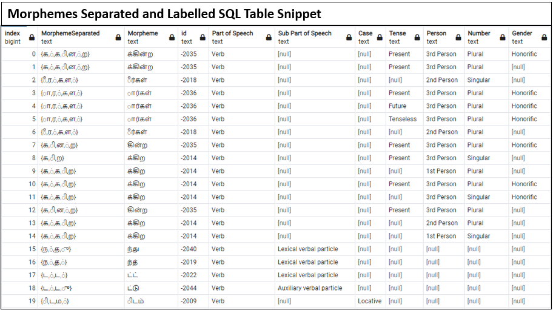

Deciphering the Indus Valley Script
This project is an attempt to decipher the ancient Indus Valley script by comparing it to modern Tamil (a Dravidian language).
History and Background
This project is an attempt to decipher the ancient Indus Valley script by comparing it with modern Tamil (a Dravidian language).
Our strategy is to:
Convert Tamil script from syllabic to logosyllabic by converting morphemes to signs.
Perform a statistical analysis to compare the converted script with the Indus script.
Here are notes on terminology:
Tamil - A Dravidian language
Syllabic script - A writing system whose characters represent syllables.
Logosyllabic script - A writing systems whose characters represent syllables, words and morphemes.
Morpheme - The smallest part of a word that changes its meaning. Ex- 'ing' in 'following'
The Indus Valley or Harappan civilization is India's oldest civilization spanning from 5500 BCE to 1300 BCE. However, their writing system is still undeciphered. The obstacles to deciphering the script have included:

- The exact uses of the artifacts are mostly unknown.
- The root language of the script is unknown.
- The texts are short (mean = 4.5 signs).
- Lack of bilingual inscription/tablet, E.g. Rosetta stone which recorded two Egyptian scripts and ancient Greek
- The complete corpus of the text was not widely available.
Since 2013, however, there have been breakthroughs in the field of population genetics that have given clues about the
root language of the script. The 2013 paper ‘South Asia: Dravidian Linguistic History’ authored by
Professor Franklin C. Southworth and Dr David W. McAlpin reconstructed Proto Dravidian (one of the two main Indian
language families) vocabulary and found similarities with Proto Elamite vocabulary (the language of the Zagros region).
Through their archeological and linguistic research, they were able to conclude that the Harappan language is most
likely Proto Dravidian (with influences from Proto Elamite). Furthermore, it was concluded that this languge has
evolved into the major modern Dravidian languages (Tamil, Telugu, Kannada, etc).
We are testing the hypothesis that Proto Dravidian is the language of the Harappans by comparing modern
Tamil with the Harappan script.
We are testing the hypothesis that Proto Dravidian is the language of the Harappans by comparing modern Tamil with the Harappan script.
Data Preprocessing
Using the labelled Tamil database provided by the Institute of Formal and Applied Linguistics (UFAL) See Tagged Dataset.
The dataset consists of Tamil news articles tagged by part of speech. Some of the morphemes including clitics and postpositions were alreedy separated. However, the dataset does
not separate noun and verb morphemes. Tamil word morphology is exclusive to nouns and verbs. We split the database into morphemes, clitics, and lemmas and formulated tables stored in our PostgresSQL server.

Statistical Analysis
We are performing a statistical analysis in Python on both the Tamil and Indus scripts to evaluate metrics such as sign connectivity, positional frequency and polyvalency.
Some methods we will use include multivariate segmentation method and frequency histograms.
We are using positional histograms to find possible initial, medial, and terminal signs on our converted Tamil dataset. We have identified key sign pairs and have calculated their connectivities. Using this, we create our segmentation trees. The higher the segmentation tree, the higher the connectivity between the sign pair. We can then compare this to Indus sign groups. The goal is to identify morphemes with similar distributions in both scripts.


Machine Learning
We programmed a SVM algorithm to automatically perform morpheme extraction on Tamil. We referenced the paper 'Morpheme Extraction and Lemmatization for Tamil using Machine Learning' which used SVM to perform Tamil morpheme segmentation resulting in a high F score. Morpheme extraction is an essential part of morphological analysis.
After preprocessing, the words in our dataset and SQL tables were used for our SVM. We obtained the form, lemma, part of speech identifier, and identified the morphemes within
each word. After consulting the paper 'Morpheme Extraction and Lemmatization for Tamil using Machine Learning’, we identified the current letter of the word, prefix, vowel/consonant,
noun, and verb as vital features for the algorithm.
We programmed to manually fill the features_df with the appropriate features:
- Identified if the current letter of the word was a vowel (1) or consonant (0)
- Noted if the word was a noun indicated by a 1 and a verb represented by a 1 in their columns
- We extracted the letters before the current letter to fill the prefix column
- Added programming to identify the morpheme boundaries in each word as our output label for the model
Before implementing the model, Label Encoding was used on the letters column and prefix columns to allow for numerical values only. Features
selected were the index, vowel/consonant, noun, verb, letter_label_encoded, and prefix_label_encoded. A Standard Scaler was applied to avoid
numerical overflow while running the model. The output label for our model was defined as morpheme boundary.
We used a 75% training and 25% testing data split with a rbf kernel with a gamma of 0.8 to achieve an accuracy of 76%.
Next Steps: Use the ML model on a bigger modern Tamil dataset and on an old Tamil dataset to perform morpheme segmentation to use extracted morphemes in statistical analyses